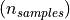
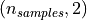
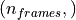
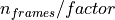
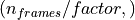

visiannot.visiannot.components.Signal¶
Module defining Signal
API¶
Class Signal¶
Methods:
|
Downsamples the input data by the specified factor using mean |
|
Sets the instance with a new signal frequency |
|
Get method |
|
Returns the signal data in the range defined by |
|
Get method |
Get method |
|
Get method |
|
Get method |
|
|
Sets the instance with new values |
-
class
visiannot.visiannot.components.Signal.Signal(data, freq, max_points=inf, plot_style=None, legend_text='')[source]¶ Bases:
objectClass defining a signal to plot in
ViSiAnnoTThe signal data can be accessed with the methods
Signal.getData()andSignal.getDataInRange().The attributes have the prefix _, so one should call the get methods to access them.
- Parameters
data (numpy array) – signal data, shape  if regularly sampled (i.e.
freq != 0), or  if not regularlay sampled (i.e.freq == 0), then first column contains the timestamp in milliseconds and the second column contains the datafreq (int or float) – signal frequency, set it to 0 if not regularly sampled
max_points (int) – maximum number of points to display in
ViSiAnnoT(used inSignal.getDataInRange())plot_style (dict) – plot style of the signal, see https://pyqtgraph.readthedocs.io/en/latest/graphicsItems/plotdataitem.html for details
legend_text (str) – legend associated to the signal plot
- Author
Raphael Weber
-
static
downSample(data, factor)[source]¶ Downsamples the input data by the specified factor using mean
- Parameters
data (numpy array) – signal data to downsample, shape 
factor (int) – downsampling factor, make sure that  is an integer
- Returns
downsampled signal data, shape 
- Return type
numpy array
-
downsampleSignal(new_freq)[source]¶ Sets the instance with a new signal frequency
Once the signal data is downsampled, the method calls the method
Signal.setSignal().NB: make sure that this method is called only if the signal is regularly sampled.
- Parameters
new_freq (int or float) – new frequency of the signal, make sure that it is littler than the current frequency
- Author
Raphael Weber
-
getData()[source]¶ Get method
- Returns
signal data, shape (even if regularly sampled), first column contains the timestamp in milliseconds and the second column contains the data
- Return type
numpy array
-
getDataInRange(first_frame_ms, last_frame_ms)[source]¶ Returns the signal data in the range defined by
first_frame_ms:last_frame_ms- Parameters
first_frame_ms (int) – first frame of the range in milliseconds
last_frame_ms (int) – last frame of the range in milliseconds
- Returns
signal data in the range [first_frame_ms:last_frame_ms]
- Return type
numpy array
- Author
Raphael Weber